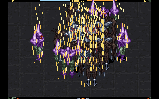

The War of Genesis[Lv.102]
class101 자청 자동수익 강의 7-1
안드로이드 JAVA : 01. View - 04. 크기 (실습)
안드로이드 JAVA : 01. View - 03. 크기 (개념)
class101 자청 자동수익 강의 6-7
class101 자청 자동수익 강의 6-6
class101 자청 자동수익 강의 6-5
class101 자청 자동수익 강의 6-4
class101 자청 자동수익 강의 6-3
class101 자청 자동수익 강의 6-2
class101 자청 자동수익 강의 6-1
class101 자청 자동수익 강의 5-15
class101 자청 자동수익 강의 5-14
class101 자청 자동수익 강의 5-13
class101 자청 자동수익 강의 5-12
class101 자청 자동수익 강의 5-11
class101 자청 자동수익 강의 5-10
안드로이드 JAVA : 01. View - 02. 개요 (실습)
안드로이드 JAVA : 01. View - 01. 개요 (개념)
class101 자청 자동수익 강의 5-9
class101 자청 자동수익 강의 5-8
class101 자청 자동수익 강의 5-7
class101 자청 자동수익 강의 5-6
class101 자청 자동수익 강의 5-5
class101 자청 자동수익 강의 5-4
class101 자청 자동수익 강의 5-3
class101 자청 자동수익 강의 5-2
class101 자청 자동수익 강의 5-1
class101 자청 자동수익 강의 4-6
class101 자청 자동수익 강의 4-5
class101 자청 자동수익 강의 4-4
class101 자청 자동수익 강의 4-3
class101 자청 자동수익 강의 4-2
class101 자청 자동수익 강의 4-1
class101 자청 자동수익 강의 3-6
class101 자청 자동수익 강의 3-5
class101 자청 자동수익 강의 3-4
class101 자청 자동수익 강의 3-3
class101 자청 자동수익 강의 3-2
class101 자청 자동수익 강의 3-1
class101 자청 자동수익 강의 2-6
class101 자청 자동수익 강의 2-5
class101 자청 자동수익 강의 2-4
class101 자청 자동수익 강의 2-3
class101 자청 자동수익 강의 2-2
class101 자청 자동수익 강의 2-1
class101 자청 자동수익 강의 1-7
class101 자청 자동수익 강의 1-6
class101 자청 자동수익 강의 1-5
class101 자청 자동수익 강의 1-4
class101 자청 자동수익 강의 1-3
class101 자청 자동수익 강의 1-2
class101 자청 자동수익 강의 1-1
class101 자청 자동수익 강의 인트로 3
class101 자청 자동수익 강의 인트로 2
class101 자청 자동수익 강의 인트로 1
class101 신사임당 스마트스토어 강의 12-5
class101 신사임당 스마트스토어 강의 12-4
class101 신사임당 스마트스토어 강의 12-3
class101 신사임당 스마트스토어 강의 12-2
class101 신사임당 스마트스토어 강의 12-1
class101 신사임당 스마트스토어 강의 11-4
class101 신사임당 스마트스토어 강의 11-3
class101 신사임당 스마트스토어 강의 11-2
class101 신사임당 스마트스토어 강의 11-1
class101 신사임당 스마트스토어 강의 10-5
class101 신사임당 스마트스토어 강의 10-4
class101 신사임당 스마트스토어 강의 10-3
class101 신사임당 스마트스토어 강의 10-2
하나라도 더 파는 진짜 방법｜마케팅 겨자씨
class101 신사임당 스마트스토어 강의 10-1
class101 신사임당 스마트스토어 강의 9-4
class101 신사임당 스마트스토어 강의 9-3
class101 신사임당 스마트스토어 강의 9-2
class101 신사임당 스마트스토어 강의 9-1
class101 신사임당 스마트스토어 강의 8-4
class101 신사임당 스마트스토어 강의 8-3
class101 신사임당 스마트스토어 강의 8-2
class101 신사임당 스마트스토어 강의 8-1
class101 신사임당 스마트스토어 강의 7-6
class101 신사임당 스마트스토어 강의 7-5
class101 신사임당 스마트스토어 강의 7-4
class101 신사임당 스마트스토어 강의 7-3
class101 신사임당 스마트스토어 강의 7-2
class101 신사임당 스마트스토어 강의 7-1
class101 신사임당 스마트스토어 강의 6-6
class101 신사임당 스마트스토어 강의 6-5
class101 신사임당 스마트스토어 강의 6-4
class101 신사임당 스마트스토어 강의 6-3
class101 신사임당 스마트스토어 강의 6-2
class101 신사임당 스마트스토어 강의 6-1
class101 신사임당 스마트스토어 강의 5-8
class101 신사임당 스마트스토어 강의 5-7
class101 신사임당 스마트스토어 강의 5-6
class101 신사임당 스마트스토어 강의 5-5
class101 신사임당 스마트스토어 강의 5-4
class101 신사임당 스마트스토어 강의 5-3
class101 신사임당 스마트스토어 강의 5-2
class101 신사임당 스마트스토어 강의 5-1
class101 신사임당 스마트스토어 강의 4-5
class101 신사임당 스마트스토어 강의 4-4
class101 신사임당 스마트스토어 강의 4-3
class101 신사임당 스마트스토어 강의 4-2
class101 신사임당 스마트스토어 강의 4-1
class101 신사임당 스마트스토어 강의 3-5
class101 신사임당 스마트스토어 강의 3-4
class101 신사임당 스마트스토어 강의 3-3
class101 신사임당 스마트스토어 강의 3-2
class101 신사임당 스마트스토어 강의 3-1
class101 신사임당 스마트스토어 강의 2-5
class101 신사임당 스마트스토어 강의 2-4
class101 신사임당 스마트스토어 강의 2-3
class101 신사임당 스마트스토어 강의 2-2
class101 신사임당 스마트스토어 강의 2-1
class101 신사임당 스마트스토어 강의 1-4
class101 신사임당 스마트스토어 강의 1-3
class101 신사임당 스마트스토어 강의 1-2
class101 신사임당 스마트스토어 강의 1-1
class101 신사임당 스마트스토어 강의 0-2
class101 신사임당 스마트스토어 강의 0-1
프로그램없이 쇼핑키워드 찾는 방법｜스마트스토어 노하우
1위 카테고리 찾는 방법｜스마트스토어 노하우
알아서 트래픽 모아주는 블로그 포스팅 방법｜스마트스토어 노하우
[올인원 패키지 : 안드로이드 앱 개발]
안드로이드 Basic with Java
01. View - 01. 개요 (개념)
**
01. View - 02. 개요 (실습)
**
01. View - 03. 크기 (개념)
**
01. View - 04. 크기 (실습)
**
01. View - 05. Linearyout (개념)
**
01. View - 06. Linearlayout (실습)
**
01. View - 07. Relativelayout (개념)
**
01. View - 08. Relativelayout (실습)
**
01. View - 09. FrameLayout (개념)
**
01. View - 10. FrameLayout (실습)
**
01. View - 11. Scrollview (개념)
**
01. View - 12. Scrollview (실습)
**
01. View - 13. [과제] 과제 설명
**
01. View - 14. 과제 풀이 (1)
**
01. View - 15. 과제 풀이 (2)
**
01. View - 16. 과제 풀이 (3)
**
02. Java - 01. 자바란
**
02. Java - 02. 변수 (개념)
**
02. Java - 03. 자료형 (개념)
**
02. Java - 04. 변수,자료형 (실습)
**
02. Java - 05. 메소드 (개념)
**
02. Java - 06. 메소드 (실습)
**
02. Java - 07. 연산자 (개념)
**
02. Java - 08. 연산 (실습)
**
02. Java - 09. 제어흐름 (개념)
**
02. Java - 10. 제어흐름 (실습)
**
02. Java - 11. 제어흐름2 (개념)
**
02. Java - 12. 제어흐름2 (실습)
**
02. Java - 13. 배열 (개념)
**
02. Java - 14. 배열 (실습)
**
02. Java - 15. 리스트 (개념)
**
02. Java - 16. 리스트 (실습)
**
02. Java - 17. [과제] 중간과제 설명
**
02. Java - 19. 클래스 (개념)
**
02. Java - 18. [과제] 중간과제 풀이 영상
**
02. Java - 20. 클래스 (실습)
**
02. Java - 21. [과제] 클래스과제 설명
**
02. Java - 22. 클래스과제 풀이
**
02. Java - 23. 상속 (개념)
**
02. Java - 24. 상속 (실습)
**
02. Java - 25. 인터페이스 개념
**
02. Java - 26. 인터페이스 실습
**
02. Java - 27. 접근제어자 개념
**
02. Java - 28. 접근제어자 실습
**
02. Java - 29. 제너릭 개념
**
02. Java - 30. 파이널 과제 설명
**
02. Java - 31. 파이널 과제 풀이
**
03. Android - 01. 안드로이드 스튜디오 투어 1
**
03. Android - 02. 안드로이드 스튜디오 투어 2
**
03. Android - 03. 안드로이드 스튜디오 투어 3
**
03. Android - 04. 안드로이드 스튜디오 투어 4
**
03. Android - 05. Activity 개념
**
03. Android - 06. Activity 실습
**
03. Android - 07. Intent 개념
**
03. Android - 08. Intent 실습 1
**
03. Android - 09. Intent 실습 2
**
03. Android - 10. Intent 실습 3
**
03. Android - 11. Stack 개념
**
03. Android - 12. Stack 실습
**
03. Android - 13. Thread 개념
**
03. Android - 14. Thread 실습
**
03. Android - 15. Context 개념
**
03. Android - 16. Context 실습
**
03. Android - 17. Resource 실습
**
03. Android - 18. ViewComponent 실습
**
03. Android - 19. Listenr 실습
**
03. Android - 20. 계산기 만들어보기 과제 설명
**
03. Android - 21. 계산기 만들어보기 과제 풀이
**
03. Android - 22. Fragmnet 개념
**
03. Android - 23. Fragmnet 실습 1
**
03. Android - 24. Fragmnet 실습 2
**
03. Android - 25. Fragmnet 실습 3
**
03. Android - 26. Fragmnet 실습 4
**
03. Android - 27. Library 개념
**
03. Android - 28. Library 실습
**
03. Android - 29. AddView 개념
**
03. Android - 30. AddView 실습
**
03. Android - 31. 전화번호부 과제 설명
**
03. Android - 32. 전화번호부 과제 풀이
**
03. Android - 33. ListView 개념
**
03. Android - 34. ListView 실습 1
**
03. Android - 35. ListView 실습 2
**
*03. Android - 36. ListView 실습 3
**
03. Android - 37. Recycvler VIew 개념
**
03. Android - 38. Recycvler VIew 실습
**
03. Android - 39. Pager , TabLayout 개념
**
03. Android - 40. Pager , TabLayout 실습
**
03. Android - 41. Shared Preference 개념
**
03. Android - 42. Shared Preference 실습
**
03. Android - 43. AsyncTask 개념
**
03. Android - 44. AsyncTask 실습
**
03. Android - 45. Network 개념
**
03. Android - 46. Network 실습 1
**
03. Android - 47. Network 실습 2
**
03. Android - 48. Authorization 개념
**
03. Android - 49. Authorization 실습
**
안드로이드 Basic with Kotlin
01. 기본 - 00. AndroidStudio 프로젝트만들기
01. 기본 - 01. First (가장먼저 알아야 할 것)
01. 기본 - 02. Number (숫자형)
01. 기본 - 03. String (문자형)
01. 기본 - 04. Any (Any 형)
01. 기본 - 05. function (함수)
01. 기본 - 06. condition (제어문)
01. 기본 - 07. label (레이블)
01. 기본 - 08. collection (컬렉션
01. 기본 - 09. Exception (예외)
02. 객체지향 - 10. Class (클래스의 기본)
02. 객체지향 - 11. 다형성 (다형성)
02. 객체지향 - 12. Abstract.Interface
02. 객체지향 - 13. DataClass
02. 객체지향 - 14. Object
03. 함수형 프로그래밍 - 15. lambdas와 함수형프로그래밍
03. 함수형 프로그래밍 - 16. 주요함수
03. 함수형 프로그래밍 - 17. Closure
03. 함수형 프로그래밍 - 18. 확장함수
03. 함수형 프로그래밍 - 19. DSL
03. 함수형 프로그래밍 - 20. Currying
04. 재미있는 기능 - 21. infix
04. 재미있는 기능 - 22. multi values return
04. 재미있는 기능 - 23. Lazy and Lateinit
04. 재미있는 기능 - 24. properties
04. 재미있는 기능 - 25. java interlop (자바와 연동)
05. 실전 - 01. Android 개발시 Kotlin의 장점 11개 (Java to Kotlin)
05. 실전 - 02. 미니프로젝트 cardshare
안드로이드 Project
01-00. 첫번째 프로젝트 소개
01-01. Google Vision Api 소개
01-02. Google Vision Api 설정
01-03. 화면 구성 (1)
01-04. 화면 구성 (2)
01-05. 다이얼로그 만들기
01-06. Interface 활용
01-07. 권한 얻기(1)
01-08. 권한 얻기(2)
01-09. 카메라 열기
01-10. Provider 만들기
01-11. 카메라로 찍은 사진 가져오기
01-12. 사진첩에서 사진 가져오기
01-13. Google Vision Api 사용준비
01-14. Asynctask 만들기(1)
01-15. Asynctask 만들기(2)
01-16. Request Headr 만들기
01-17. Request 만들기
01-18. Response 받기
01-19. 코드 가다듬기 - 1
01-20. 코드 가다듬기 - 2
01-21. 개발문서 보기
01-22. 문제 해결하기
01-23. 분석 선택화면 만들기
01-24. 분석 선택화면 이벤트 다루기
1-25. 원하는 분석 요청하기
02-00. 두번째 프로젝트 소개
02-01. 파이어베이스 프로젝트 생성
02-02. 파이어베이스 인증 구현 - 1
02-03. 파이어베이스 인증 구현 - 2
02-04. 파이어베이스 인증 구현 - 3
02-05. 파이어베이스 인증 구현 - 4
02-06. 파이어베이스 인증 구현 - 5
02-07. 파이어베이스 인증 구현 - 6
02-08. 계정설정 기능 만들기
02-09. 로그아웃, 탈퇴 기능 만들기
02-10. 탈퇴 다이얼로그 만들기
02-11. OpenWeatherMap 소개
02-12. OpenAPI 실습
02-13. Application 이란
02-14. Retrofit 설정 - 1
02-15. Retrofit 설정 - 2
02-16. Parsing 하기
02-17. 위치정보 가져오기
02-18. 날씨정보 요청하기
02-19. 날씨정보 그리기 - 1
02-20. 날씨정보 그리기 - 2
02-21. 날씨정보 그리기 - 3
02-22. 뒤로가기 버튼 조정하기
02-23. 로딩 화면 만들기
02-24. Firebase Crashlytics 기능 구현
벨로퍼트's JavaScript 입문
00. JavaScript는 뭔가요
01. Hello-JavaScript
02. 변수
03. 연산자 - 산술연산자, 대입연산자
04. 연산자 - 논리연산자
05. 연산자 - 비교연산자, 문자열 붙이기
06. 조건문 - if, else, else if
07. 조건문 - switch case
08. 함수
09. 함수 - Template Literal
10. 함수 - 연습
11. 함수 - 화살표 함수
12. 객체
13. 객체 - 비구조화 할당
14. 객체 - 객체 안에 함수 넣기
15. 객체 - Getter 와 Setter 함수
16. 배열
17. 반복문 - for
18. 반복문 - while
19. 반복문 - for...of, for...in
20. 반복문 - continue 와 break
21. 반복문 - 연습과 퀴즈
22. 배열 내장함수 - forEach
23. 배열 내장함수 - map
24. 배열 내장함수 - filter
25. 배열 내장함수 - splice 와 slice
26. 배열 내장함수 - shift, pop, unshift, push
27. 배열 내장함수 - reduce
28. 배열 내장함수 - reduce 다른 예시
29. 배열 내장함수 - 복습과 퀴즈
30. 프로토타입과 클래스 - 객체 생성자
31. 프로토타입과 클래스 - 객체 생성자 상속하기
32. 프로토타입과 클래스 - ES6 Class
33. 프로토타입과 클래스 - 연습 - Food class 만들기
React Native
00. 소개 - 01. React Native OT
00. 소개 - 02. React Native 역사, 경쟁사
01. 시작 - 01. 세부적인 설치 과정 (nodejs & npm)
01. 시작 - 02. React Native 설치 끝내기
01. 시작 - 03. Android & iOS 동시 돌려보기
02. ES6 - 01. Babel 소개, String literal
02. ES6 - 02. 객체 비구조화, 배열 비구조화, 객체 리터럴
02. ES6 - 03. babel 로컬 환경설정
02. ES6 - 04. for..of
02. ES6 - 05. Spread Operator
02. ES6 - 06. Rest Operator
02. ES6 - 07. Arrow Function
02. ES6 - 08. Default Params
02. ES6 - 09. Includes
02. ES6 - 10. Let & Const
02. ES6 - 11. Import & Export 바벨 세팅 마무리
02. ES6 - 12. Classes
02. ES6 - 13. Trailing Commas
02. ES6 - 14. Map & Set
02. ES6 - 15. Async & Await
03. Components - 01. Components OT
03. Components - 02. Components (Button, View)
03. Components - 03. Comonents (Input, Touch, Keyboard, List)
04. State 관리 - 01. Props & State
04. State 관리 - 02. Style - Flexbox (1)
04. State 관리 - 03. Style - Flexbox (2)
04. State 관리 - 04. Style - Flexbox Exercise
04. State 관리 - 05. View, Image, Text props
05. 화면 - 01. 로그인 화면 (1)
05. 화면 - 02. 로그인 화면 (2)
05. 화면 - 03. TextInput 재사용 컴포넌트 만들기
05. 화면 - 04. TextInput 재사용 컴포넌트 보완
05. 화면 - 05. Button 재사용 컴포넌트 (1)
05. 화면 - 06. Button 재사용 컴포넌트 (2)
05. 화면 - 07. 회원가입 화면 만들기
06. Flow - 01. Flow 적용하기 (LoginScreen, Button)
06. Flow - 02. Flow 적용하기 (TextInput, SignupScreen)
07. Navigation - 01. React-Navigation OT
07. Navigation - 02. Navigation 종류 및 사용법 알아보기-1
07. Navigation - 03. Navigation 종류 및 사용법 알아보기-2
07. Navigation - 04. 프로젝트 구조 짜기
07. Navigation - 05. React-Navigation 설치하기
07. Navigation - 06. React-Navigation 직접 사용
08. Unit Test - 01. Unit Testing - Intro to Jest - Enzyme
08. Unit Test - 02. Unit Testing - Jest & Enzyme 설치 및 Snapshot 테스트
08. Unit Test - 03. Unit Test 종류 알아보기
08. Unit Test - 04. Jest spy & Test coverage 올리기
09. React Life - 01. React Life Cycle
10. Animation - 01. React Native Animation OT
10. Animation - 02. Layout Animation IOS
10. Animation - 03. Layout Animation Android
10. Animation - 04. Animated Animation 알아보기
10. Animation - 05. 여러 Animated 합치기
10. Animation - 06. Interpolation & extrapolate
11. 실습 - 01. 애니메이션 실습 과제 소개
11. 실습 - 02. 애니메이션 실습 과제 결과물
11. 실습 - 03. 애니메이션 실습 구현 정리
11. 실습 - 04. 애니메이션 실습 해답 1
11. 실습 - 05. 애니메이션 실습 해답 2
11. 실습 - 06. 애니메이션 실습 해답 3
12. 모듈 - 01. React Native 네이티브 모듈 만들기 OT
12. 모듈 - 02. iOS Native Bridge Method 만들기
12. 모듈 - 03. iOS Native Subscription 만들기
12. 모듈 - 04. Native Module Helper 라이브러리 소개
12. 모듈 - 05. iOS Native UI Event 만들기
12. 모듈 - 06. Android Native Bridge Method 만들기
12. 모듈 - 07. Android Native Subscription 만들기
12. 모듈 - 08. Android Native Subscription 만들기 2
13. 상태관리 - 01. 리액트네이티브 글로벌 상태관리
13. 상태관리 - 02. Redux 개념
13. 상태관리 - 03. Redux 사용하기
13. 상태관리 - 04. Mobx 사용하기
13. 상태관리 - 05. Context Api 사용하기
14. 배포 - 01. 리액트네이티브 앱 배포 과정 설명-1
15. Extra - 01. What's Not Covered - Network Programming, react-hook, expo, dooboo-cli
15. Extra - 02. Introducing Opensource Project - TalkTalk
15. Extra - 03. 마무리 및 앞으로 학습내용 정리
[올인원 패키지 : 게임 제작]
게임 기획
01. Intro - 01. 강사 소개 및 강의 소개
02. 이론 - 01. 게임의 역사 - 1
03. 이론 - 02. 게임의 역사 - 2
04. 이론 - 03. 게임 산업의 시장상황 및 동향
05. 이론 - 04. 장르의 발전형태
06. 프로세스 - 01. 기획직군 분류
07. 프로세스 - 02. 기획직군 분류 - 2
08. 프로세스 - 03. 게임제작 프로세스
09. 콘셉트 - 01. 게임콘셉트 개론
10. 콘셉트 - 02. 장르결정
11. 콘셉트 - 03. 배경설정
12. 콘셉트 - 04. 핵심 특징 설정 - 1
13. 콘셉트 - 05. 핵심 특징 설정 - 2
14. 콘셉트 - 06. 게임매커니즘
15. 콘셉트 - 07. 코어루프
16. 스토리 - 01. 시나리오 개론 - 1
17. 스토리 - 02. 시나리오 개론 - 2
18. 스토리 - 03. 세계관 설정 방법
19. 스토리 - 04. 이야기 설정방법
20. 스토리 - 05. 설정 세부 작업
21. 시스템 - 01. 게임 시스템 개론
22. 시스템 - 02. 캐릭터 시스템
23. 시스템 - 03. 아이템 시스템 - 1
24. 시스템 - 04. 아이템 시스템 - 2
25. 시스템 - 05. 전투시스템 - 1
26. 시스템 - 06. 전투시스템 - 2
27. 시스템 - 07. 퀘스트 시스템
28. 시스템 - 08. PVP 시스템
29. 시스템 - 09. BM 시스템 - 1
30. 시스템 - 10. BM 시스템 - 2
31. 레벨 - 01. 게임 레벨 개론
32. 레벨 - 02. 레벨 구성 요소 나열
33. 레벨 - 03. 공간의 설정
34. 레벨 - 04. 필드 오브젝트 구성하기
35. 레벨 - 05. 몬스터 스폰 시스템
36. 레벨 - 06. 동선 구성하기
37. 레벨 - 07. 레벨 디자인 패턴
38. 밸런스 - 01. 게임 밸런스 개론
39. 밸런스 - 02. 밸런스 기반 만들기
40. 밸런스 - 03. 데이터 설정하기
41. 밸런스 - 04. 페이퍼 시뮬레이션
42. 밸런스 - 05. 실기 테스트
게임 시나리오
01. OT - 01. 오리엔테이션
02. 이론 - 01. 1장개요, 게임 시나리오
03. 이론 - 02. 스토리텔링의 이해
04. 이론 - 03. 게임 스토리 분류
05. 이론 - 04. 플롯, 3막 구조
06. 이론 - 05. 그레마스의 행위자 모델, 영웅의 여정 12단계
07. 스토리 - 01. 2장 개요, 훅과 캐릭터
08. 스토리 - 02. 게임다운 스토리텔링의 특징
09. 세계관 - 01. 3장 개요, 세계관의 개념
10. 세계관 - 02. 세계관 설정 양식
11. 세계관 - 03. 세계관 상세 설정 - 지역, 종족
12. 캐릭터 - 01. 4장 개요, 캐릭터-스토리 모델
13. 캐릭터 - 02. 세력 설정, 외형 설정
14. 3인칭 - 01. 5장 개요, 3인칭 관점의 이해
15. 3인칭 - 02. 게임 스토리 창작 10단계
16. 3인칭 - 03. 게임 시나리오 다운 글쓰기
17. 3인칭 - 04. 추리어드벤처 게임의 시나리오 작법(1)
18. 3인칭 - 05. 추리어드벤처 게임의 시나리오 작법(2)
19. 3인칭 - 06. 스토리 후작업 게임 시나리오 - 매니지먼트RPG(1)
20. 3인칭 - 07. 스토리 후작업 게임 시나리오 - 매니지먼트RPG(2)
21. 3인칭 - 08. AOS의 이해, AOS의 세계관 설정
22. 3인칭 - 09. AOS 캐릭터 설계, AOS 캐릭터를 제외한 스토리텔링
23. 3인칭 - 사례 분석 1
24. 3인칭 - 사례 분석 2
25. 중간적 - 01. 6장 개요, 중간적 관점의 이해
26. 중간적 - 02. 퀘스트 스토리텔링
27. 중간적 - 03. 메인퀘스트 스토리텔링
28. 중간적 - 04. 서브퀘스트 스토리텔링
29. 중간적 - 05. 퀘스트 제작의 실제
30. 중간적 - 사례 분석 3
31. 중간적 - 사례 분석 4
32. 1인칭 - 01. 7장의 개요, 1인칭 관점의 이해
33. 1인칭 - 02. AR 게임의 스토리텔링
34. 1인칭 - 03. VR 게임의 스토리텔링(1)
35. 1인칭 - 04. VR 게임의 스토리텔링(2)
36. 1인칭 - 사례 분석 5
37. 대사&보이스 - 01. 8장 개요, 대사
38. 대사&보이스 - 02. 보이스
39. 실제 - 01. 9장 개요, 시나리오 기법
40. 실제 - 02. 문제 해결을 통한 시나리오 쓰기, 역량 향상을 위한 습관
41. 실제 - 사례 분석 6
게임 마케팅
01. 강사 소개 및 강의 개요
02. 모바일 게임의 생애주기
03. 생애주기 별 마케팅 준비사항
04. 플랫폼 별 특징과 차이점
05. ASO의 이해 및 구성요소
06. ASO 실전 최적화 전략(1)
07. ASO 실전 최적화 전략(2)
08. 트래킹 솔루션의 개념
09. 트래킹 솔루션의 기능
10. 자사게임 및 경쟁 게임 분석
11. 런칭 마케팅 플랜 전략 수립
12. 모바일 광고의 매체 - 01. 애드네트워크의 개념
13. 모바일 광고의 매체 - 02. 애드네트워크의 분류
14. 모바일 광고의 매체 - 03. 애드네트워크의 형태
15. 모바일 광고의 매체 - 04. 구글 광고 실전 - 1
16. 모바일 광고의 매체 - 05. 구글 광고 실전 - 2
17. 모바일 광고의 매체 - 06. 페이스북 광고 실전
스파인 2D 게임 애니메이션
01. OT - 수업 진행 방향과 목표
02. OT - 스파인의 활용과 적용 사례
03. 준비 - 스파인 애니메이션 제작 순서 및 폴더 구조
04. 준비 - 포토샵 셋팅 및 리소스화 기초
05. 준비 - 리소스화 실전 -1
06. 준비 - 리소스화 실전 -2
07. 준비 - 리소스화 실전 -3
08. 준비 - 리소스화 실전 -4
09. 셋업 1 (초급) - 스파인 다운로드 및 설치
10. 셋업 1 (초급) - 인터페이스 둘러보기 -1
11. 셋업 1 (초급) - 인터페이스 둘러보기 -2
12. 셋업 1 (초급) - 스파인 셋팅을 위한 기초 해부학
13. 셋업 1 (초급) - 기본 셋업 -1
14. 셋업 1 (초급) - 기본 셋업 -2
15. 셋업 1 (초급) - 기본 셋업 -3
16. 셋업 2 (중급, 고급) - 웨이트 셋업 초급
17. 셋업 2 (중급, 고급) - 웨이트 셋업 중급
18. 셋업 2 (중급, 고급) - 고급 애니메이션을 위한 셋업
19. 셋업 2 (중급, 고급) - 스킨 작업 -1
20. 셋업 2 (중급, 고급) - 스킨 작업 -2
21. 애니메이션 개론 - 애니메이션 12 원칙
22. 애니메이션 개론 - 애니메이션을 위한 물리 법칙들
23. 애니메이션 개론 - Wave에 관한 이해
24. 애니메이션 개론 - 공 튀기기
25. 기본 동작 - 키포즈
26. 기본 동작 - 기본 숨쉬기 -1
27. 기본 동작 - 기본 숨쉬기 -2
28. 기본 동작 - 숨쉬기 마무리
29. 기본 동작 - 일러스트 애니메이션
30. 이동 (중급) - 이동 -1
31. 이동 (중급) - 이동 -2
32. 이동 (중급) - 이동 -3
33. 기본 공격 (고급) - 기본 공격 -1
34. 기본 공격 (고급) - 기본 공격 -2
35. 특수 공격 (고급) - 특수 공격 -1
36. 특수 공격 (고급) - 특수 공격 -2
37. 특수 공격 (고급) - 특수 공격 -3
38. 기타 동작 (응용) - 기타 동작 -1
39. 기타 동작 (응용) - 기타 동작 -2
40. 포트폴리오 정리 및 마인드셋
Unity 및 C#스크립트 기초(주세영)
01. Unity 설치 및 소개 -1
02. Unity 설치 및 소개 -2
03. Unity 설치 및 소개 -3
04. Unity 설치 및 소개 -4
05. 스크립팅 기초 -1
06. 스크립팅 기초 -2
07. 스크립팅 기초 -3
01. 슈팅 게임 만들기 -1
02. 슈팅 게임 만들기 -2
03. 슈팅 게임 만들기 -3
04. 슈팅 게임 만들기 -4
05. 슈팅 게임 만들기 -5
06. 슈팅 게임 만들기 -6
07. 슈팅 게임 만들기 -7
08. 슈팅 게임 만들기 -8
09. 슈팅 게임 만들기 -9
10. 슈팅 게임 만들기 -10
11. 슈팅 게임 만들기 -11
12. 슈팅 게임 만들기 -12
RPG 게임
01. RPG - 01. 어떤 걸 만들게 되나요
02. RPG - 02. Terrain을 이용해 필드를 만들어보자
03. RPG - 03. 필드를 가꿔보고 캐릭터를 추가하자
04. RPG - 04. 캐릭터 이동 준비
05. RPG - 05. 캐릭터 이동 - 1
06. RPG - 06. 캐릭터 이동 - 2
07. RPG - 07. 캐릭터 이동 - 3
08. RPG - 08. 캐릭터 이동 - 4
09. RPG - 09. 유니티 에니메이션 시스템
10. RPG - 10. 캐릭터 애니메이션 시키기 - 1
11. RPG - 11. 캐릭터 애니메이션 시키기 - 2
12. RPG - 12. 캐릭터 연속 공격 기능 추가 - 1
13. RPG - 13. 캐릭터 연속 공격 기능 추가 - 2
14. RPG - 14. 캐릭터에 칼과 방패를 달아주자
15. RPG - 15. 캐릭터에게 중력을 적용
16. RPG - 16. 카메라를 이동시켜보자 - 1
17. RPG - 17. 카메라를 이동시켜보자 - 2
18. RPG - 18. 카메라를 이동시켜보자 - 3
19. RPG - 20. Coroutine과 Raycast - 1
20. RPG - 19. Coroutine과 Raycast - 2
21. RPG - 21. 몬스터를 만들자 - 1
22. RPG - 22. 몬스터를 만들자 - 2
23. RPG - 23. 몬스터를 만들자 - 3
24. RPG - 24. 몬스터를 만들자 - 4
25. RPG - 25. SendMessage와 Tweener - 1
26. RPG - 26. SendMessage와 Tweener - 2
27. RPG - 27. 전투 - 1
28. RPG - 28. 전투 - 2
29. RPG - 29. 전투 - 3
30. RPG - 30. 전투 - 4
31. RPG - 31. 전투 - 5
유니티와 네트워크 프로그래밍
01. 네트워크 프로그래밍 개요
02. 윈도우 소켓 프로그래밍 - 1
03. 윈도우 소켓 프로그래밍 - 2
04. 윈도우 소켓 프로그래밍 - 3
05. 윈도우 소켓 프로그래밍 - 4
06. 윈도우 소켓 프로그래밍 - 5
07. 윈도우 소켓 프로그래밍 - 6
08. UNet(Unity Network) - 1
09. UNet(Unity Network) - 2
10. UNet(Unity Network) - 3
11. UNet(Unity Network) - 4
12. UNet(Unity Network) - 5
13. UNet(Unity Network) - 6
전략시뮬레이션
01. 들어가기에 앞서(1)
02. 들어가기에 앞서(2)
03. 리소스 준비(1)
04. 리소스 준비(2)
05. 리소스 준비(3)
06. 리소스 준비(4)
07. DataManager(1)
08. DataManager(2)
09. SoundClip - 1
10. SoundClip - 2
11. SoundClip - 3
12. SoundClip - 4
13. SoundClip - 5
14. SoundClip - 6
15. SoundClip - 7
16. SoundData - 1
17. SoundData - 2
18. SoundData - 3
19. SoundData - 4
20. SoundData - 5
20. SoundData - 5
22. SoundData - 7
23. SoundTool - 1
24. SoundTool - 2
25. SoundTool - 3
26. SoundTool - 4
27. SoundTool - 5
28. SoundTool - 6
29. SoundManager - 1
30. SoundManager - 2
31. SoundManager - 3
32. SoundManager - 4
33. SoundManager - 5
34. SoundManager - 6
35. SoundManager - 7
36. SoundManager - 8
37. SoundManager - 9
38. BGM Sound Player - 1
39. BGM Sound Player - 2
40. Manager Holder - 1
41. Manager Holder - 2
42. Grid Manager - 1
43. Grid Manager - 2
44. Grid Manager - 3
45. Input Manager - 1
46. Input Manager - 2
47. Input Manager - 3
48. Input Manager - 4
49. Input Manager - 5
50. Camera Manager - 1
51. Camera Manager - 2
52. Camera Manager - 3
53. Camera Manager - 4
54. 길찾기와 유닛 프리팝 준비 - 1
55. 길찾기와 유닛 프리팝 준비 - 2
56. DefenseBuilding Animation Controller
57. Building Controller
58. TimeManager, EntityManager, BattleManager - 1
59. TimeManager, EntityManager, BattleManager - 2
60. BuildingStateCollection
61. Building - 1
62. Building - 2
63. Building 드래그 앤 플레이스
64. UnitAniController
65. UnitController
66. Unit State Collection - 1
67. Unit State Collection - 2
포톤서버엔진
01. Review PUN - 1
02. Review PUN - 2
03. Review PUN - 3
04. PUN 예제 살펴보기 - 1
05. PUN 예제 살펴보기 - 2
06. PUN 예제 살펴보기 - 3
07. PUN 예제 살펴보기 - 4
08. PUN 예제 살펴보기 - 5
파이어베이스
01. 들어가기에 앞서
02. Firebase SDK 설치
03. Firebase Console
04. Firebase Database - 1
05. Firebase Database - 2
06. Firebase Database - 3
Unity 및 C#스크립트 기초(김민석)
01. 유니티의 설치와 소개
02. 유니티 기본 레이아웃 살펴보기
03. 유니티 C#스크립트의 역할과 사용 -1
04. 유니티 C#스크립트의 역할과 사용 -2
05. 유니티 C#스크립트의 역할과 사용 -3
06. 유니티 C#스크립트의 역할과 사용 -4
07. 유니티 C#스크립트의 역할과 사용 -5
08. 게임 오브젝트
09. 컴포넌트 -1
10. 컴포넌트 -2
클리커 게임 제작
01. 씬 구성하기_1
02. 씬 구성하기 -2
03. 게임 매니저
04. 프리팹 만들기 -1
05. 프리팹 만들기 -2
06. 프리팹 만들기 -심화
07. 프리팹 만들기 -심화 -2
08. 프리팹 만들기 -심화 -3
09. 프리팹 만들기 - 심화 -4
10. 프리팹 만들기 -심화 -5
11. 프리팹 만들기 -심화 -6
12. 충돌 다루기
13. UI 다루기
14. UI 다루기 -2
15. UI 다루기 -3
16. UI 다루기 - 4
17. UI 다루기 - 5
18. UI 다루기 - 6
19. UI 다루기 - 7
20. UI 다루기 - 8
21. UI 다루기 - 9
22. 저장 구현하기 - 1
23. 저장 구현하기 - 2
24. 저장 구현하기 - 3
25. 옵션 구현하기 - 1
26. 옵션 구현하기 - 2
27. 동영상 광고 구현하기 - 1
28. 동영상 광고 구현하기 - 2
29. 인앱 결제 구현하기
30. 빌드하기
게임 수학
01. 개요 - 01. intro
02. 수 - 02. 진수변환_양수
03. 수 - 03. 음수_부동소수점1
04. 수 - 04. 부동소수점2
05. 수 - 05. 엡실론
06. 수 - 06. 엡실론비교
07. 삼각함수와미분 - 07. 삼각함수
08. 삼각함수와미분 - 08. 극한과연속성
09. 삼각함수와미분 - 09. 변화율과각종함수의미분
10. 삼각함수와미분 - 10. 미분가능성과테일러급수
11. 벡터와점 - 11. 벡터공간
12. 벡터와점 - 12. 선형결합과기저벡터
13. 벡터와점 - 13. 내적과투영
14. 벡터와점 - 14. 외적
15. 벡터와점 - 15. 아핀공간
16. 행렬 - 16. 행렬종류와연산
17. 행렬 - 17. 행렬곱셈과벡터연산표현
18. 행렬 - 18. 가우스소거법과역행렬
19. 행렬 - 19. 행렬식
20. 행렬 - 20. 정규직교기저와Eigen
21. 행렬 - 21. Eigen2
22. 행렬 - 22. 선형변환
23. 행렬 - 23. 아핀변환
24. 행렬 - 24. 아핀변환의 종류1
25. 행렬 - 25. 아핀변환의 종류2와 월드변환
게임 물리
01. 개요 - 01. Orientation
02. 적분 - 02. 정적분
03. 적분 - 03. 부정적분 여러가지 적분법
04. 미분방정식 - 04. 1계상미분-1
05. 미분방정식 - 05. 1계상미분-2
06. 미분방정식 - 06. 2계상미분
07. 운동 - 07. 속도 가속도 등가속도
08. 운동 - 08. 포물선운동 뉴턴운동법칙
09. 힘 - 09. 마찰력
10. 힘 - 10. 항력
11. 힘 - 11. 탄성력
12. 일에너지 - 12. 일 운동에너지
13. 일에너지 - 13. 중력이한일 일률
14. 일에너지 - 14. 위치에너지 역학에너지보존
15. 운동량 - 15. 운동량 운동량보존
16. 운동량 - 16. 충격량
17. 충돌 - 17. 1차원 비탄성 완전비탄성
18. 충돌 - 18. 1차원 탄성
19. 충돌 - 19. 탄도진자
20. 진동 - 20. 비감쇠자유진동
21. 진동 - 21. 감쇠자유진동-1
22. 진동 - 22. 감쇠자유진동-2 강제진동
23. 회전 - 23. 각속도 질점 강체
24. 회전 - 24. 모멘트 질량중심 관성모멘트
25. 회전 - 25. 토크 각운동량
WEB2 JavaScript - 37. Conclusion
WEB2 JavaScript - 36. UI vs API
WEB2 JavaScript - 35. Libraries and Frameworks
WEB2 JavaScript - 34. Organizing code into files
WEB2 JavaScript - 33. Application of Objects
WEB2 JavaScript - 32. Object: Property and Method
WEB2 JavaScript - 31. Objects and Loop Statements
WEB2 JavaScript - 30. Object: Reading and Writing
WEB2 JavaScript - 29. Object: Preview
WEB2 JavaScript - 28. Application of Functions
WEB2 JavaScript - 27. Functions: Return
WEB2 JavaScript - 26. Functions: Parameters and Arguments
WEB2 JavaScript - 25. Functions
WEB2 JavaScript - 24. Functions: Preview
WEB2 JavaScript - 23. Application of Arrays and Loop Statements
WEB2 JavaScript - 22. Arrays and Loop Statements
WEB2 JavaScript - 21. Loop Statements
WEB2 JavaScript - 20. Arrays
WEB2 JavaScript - 19. Loop Statements: Preview
WEB2 JavaScript - 18. Refactoring - Removing duplicates
WEB2 JavaScript - 17. Application of Conditional Statements
WEB2 JavaScript - 16. Conditional Statements
WEB2 JavaScript - 15. Comparison Operators and Boolean data type
WEB2 JavaScript - 14. Conditional Statements: Preview
WEB2 JavaScript - 13. Program, Programming and Programmers
WEB2 JavaScript - 12. Selecting a tag to control
WEB2 JavaScript - 11. CSS Basics: Selectors
WEB2 JavaScript - 10. CSS Basics: Style tag
WEB2 JavaScript - 9. CSS Basics: Style Attributes
WEB2 JavaScript - 8. Controlling a Web Browser
WEB2 JavaScript - 7. Variables and Assignment Operators
WEB2 JavaScript - 6. Data types - Strings and Numbers
WEB2 JavaScript - 5. HTML meets JS: Console
WEB2 JavaScript - 4. HTML meets JS: Event
WEB2 JavaScript - 3. HTML meets JS: script tag
WEB2 JavaScript - 2. The goal of this course
WEB2 JavaScript - 1. Introduction
개발자 번아웃 대처방법의 모든 것
WEB2 JavaScript -37.수업을 마치며
이제 여러분에게 필요한 것은 공부보다는 실습입니다.
실습보다는 자신의 프로젝트를 시작하는 거에요.
공부에는 때가 없지만
프로젝트를 시작하는 것에는 때가 있습니다.
지금 이 순간이 여러분의 프로젝트를 시작할 때입니다.
시작이 늦어질수록, 공부를 많이 할수록
자기가 짠 코드를 긍정하기 어려워지거든요.
머릿속이 복잡해지거든요.
자신의 프로젝트를 시작할 때
모든 개념을 총동원하려고 하지 마세요.
필수불가결한 최소한의 도구만을 가지고
문제를 해결하려고 시도해 보셨으면 좋겠습니다.
그렇다면 최소한의 도구는 무엇일까요?
그것은 프로그래밍이라는 말 속에 이미 함의되어 있는 것 같아요.
순서에 따라서 실행되어야 하는 명령들이 실행되도록 하는 겁니다.
이것이 처음 시작한 우리에게 필요한 유일한 도구입니다.
객체는 말할 것도 없고,
함수도, 조건문도, 반복문도 필요하지 않습니다.
순서대로 실행되다는 것만으로도
프로그래밍은 충분히 혁명적이거든요.
머리가 너무 복잡해지면 아무것도 할 수 없어요.
최소한의 지식으로 현실의 문제를 해결하기 위해서 노력해보시면 어떨까요?
그러다보면 그것만으로는 도저히 해결할 수 없는 순간이 오는데
그때 주의깊게 반복문, 조건문, 함수, 객체를 신중하게 도입하면서
각각의 개념들간의 관계에 익숙해지다보면
마침내 유창하게 이런 개념들을 활용할 수 있게 될 겁니다.
그렇게 즐거운 시간들을 보내다보면 또 다시 한계가 찾아오겠죠.
바로 그 때가 실습을 멈추고 공부를 다시 시작할 때라고 생각합니다.
그때가 언제가 될지는 모르겠지만
앞으로 여러분들이 부딪히게 될 만한 몇가지 한계들과
그 한계를 극복하는데 도움을 줄 만한
검색어들을 좀 추천드리겠습니다.
여러분들이 웹페이지에 있는 어떤 태그를 삭제하고 싶거나
어떤 태그에 자식 태그를 추가하고 싶다면
document 객체를 좀 더 자세히 살펴 보세요.
여러분이 필요한 메소드가 그 안에 포함되어 있을 겁니다.
만약에 document 객체를 통해서도 찾을 수 없다면
DOM으로 수색 범위를 넓혀 보세요.(DOM: Document Object Model)
또 웹페이지가 아니라 웹브라우저 자체를 제어해야 한다면
window 객체를 조사해 보세요.
이를테면 현재 열려있는 웹페이지 주소가 뭔지 알아내야 될 수도 있고
여러분이 새 창을 열어야 될 수도 있고,
또 웹브라우저의 화면 크기를 JavaScript를 통해 알아야 한다면
window 객체에 속해 있는 프로퍼티나 메소드가 여러분을 도울 수 있을 거에요.
또 웹페이지를 리로드하지 않고 정보를 변경하고 싶다 ajax가 필요할 겁니다.
현대적인 웹앱을 만드는 데 필수적인 테크닉입니다.
또 웹페이지가 리로드되어도 현재 상태를 유지하고 싶다면 cookie를 배우세요.
cookie와 함께라면 사용자를 위한 개인화된 서비스를 제공할 수 있습니다.
인터넷이 끊겨도 동작하는 웹페이지를 만들고 싶다면
offline web application을 찾아보세요.
화상통신 웹 앱을 만들고 싶다고요?
webRTC라는 것이 있습니다.
또 사용자의 음성을 인식하고 음성으로 정보를 전달하고 싶다면
speech로 시작하는 API들을 살펴 보세요.
또 3차원 그래픽으로 게임과 같은 것을 만들고 싶다면
webGL을 살펴보십시오.
가상현실에 관심이 많으시다고요?
그럼 webVR이라는 것도 있습니다.
2020 자바스크립트 트렌드는 어떻게 될까?
난 프로그래밍 앱 개발을 어떻게 배웠는가?
자바스크립트로 세상을 지배하는 방법 5가지
* Phaser JS 혹은 Impact JS라는 것이 있음.
이를 활용해서 어썸 비디오게임을 만들 수 있는데,
특히 엔진에 IS physics가 딸려있어서 훨씬 쉽게 개발할 수 있고,
또한 브라우저의 그래픽카드로 활용할 수 있지.
nodeJS, socket io를 활용해서 인터랙티브 멀티플레이어 2D 게임도 만들 수 있어.
이것의 훌륭한 예시가 "http://wanderers.io/"라고 있어.
리얼타임, 멀티플레이어, 2D 전략게임이고, JS로만 개발된거야!
* Heraclos는 아름다운 3JS를 활용한 비디오 게임이야.
사운드, 비디오, 텍스트, 스토리 등등을 다 결합했어. 브라우져에서 말이지.
넘나 아름답고, 어메이징한데 마찬가지로 몽땅 JS로 작업된거야.
아이디어가 있다구? 창의력을 위한 조언 한마디
그게 문제라고 생각해. 너무 빨리 구글 검색을 했고,
너무 빨리 사람들에게 물어봤어.
검색해보면 이미 존재하지 거의다. 그러면 김이 팍 빠지고,
이미 있구만 뭐. 하면서 바바이 하게 되는거야.
아이디어가 생각나면 일단 적어.
주의 기능을 적지. 예를 들면, 아이디어가 해결할 3가지 문제, 심플하게!
그리고 생각만 하면서 일단 1-2주 정도 묵히는거야.
아무것도 안해. 생각만 해.
생각을 하면 할수록 아이디어에 더 빠지게 되어있어.
더 생각하면 할수록 아이디어에 대한 열정이 샘솟지.
이미 누군가 완료한 작품을 본다면,
그건 너의 창의력에 데미지를 줄 수 있어.
Docker가 왜 좋은지 5분 안에 설명해줌
Docker를 통해 다른 머신에서도 같은 환경을 구현할 수 있다.
1. 원하는 개발 환경을 파일에 저장하면, docker는 이를 너가 원하는
어떤 머신에든 해당 환경을 시뮬레이션 해준다.
2. 이러한 환경들은 각기 독립적으로 존재하기 때문에,
원하는 무슨 환경이든 모듈식으로 관리 가능하다.
깃, 깃허브, 기초개념 잡아드림
API 기초개념 잡아드림
웹 개발자에게 블록체인이란?
블록체인은 암호학과 수학 덕분에 가능한, 정보이 영구적 보관 기술을 뜻해.
"새로운 플랫폼"이라 이해하면 됨.
모바일 앱 등을 블록체인 위에 올려서 출시할 수 있는 것이야!
그냥 개발자가 활용할 수 있는 새로운 플랫폼이야.
가능성이 무궁무진한!!!
모바일 혁명이 열리면서 가능성이 엄청 커진 것처럼,
블록체인 덕분에 정보를 영구적으로, 안전하게 보관하게 되면서
가능성이 열리게 된거지.
현재 회사들이 원하는 블록체인 개발자는
C, C++, Java, Python, Javascript, GO를 다루는 개발자들이라는 사실이야!
자주 쓰이는 프로그래밍 언어들인 것이지.
왜냐면 블록체인은 한개의 언어로 배우는 그런 기술이 아니야.
블록체인은 "백엔드" 같은거야.
백엔드처럼 블록체인도 여러가지 언어로 접근할 수 있어.
오직 블록체인 개발자만 쓰는 그런 특정 언어 같은건 없어.
블록체인 개발을 시작할 때 2가지를 살펴보길 바래.
하나는 이더리움. 맞아. 여전히 논란은 있지만.
'스마트 콘트랙트'라는 쿨한 컨셉을 갖고있어.
두번 째로 '하이퍼레저(hyperledger)'라는 게 있는데
이건 리눅스 재단에서 만든 프로젝트야.
이 프로젝트는 암호화폐 중심이 아니라
블록체인이 필요한 비즈니스, 어플리케이션을 만드는데 집중하고 있어.
아직도 SQR을 모른다고 해서 5분 설명해드림
주니어 개발자가 빠르게 성장할 수 있는 비법은?
1. 테크놀로지에만 집중하지 마라.
한가지 언어만 공부하는 것이 아니라 전체적인 모습을 보면 좋겠어.
전체적인 흐름을 알고, 너가 어디에 있는지를 아는 것은
너를 엄청 도와줄 거라 장담할 수 있어.
2. 무료로 프로그래밍 일을 해보길 바래.
예를 들면, 사이드 프로젝트, 토이 프로젝트를 일주일에 1개씩,
8개를 만들어봐. 꽤나 큰 포트폴리오가 되는거지.
그러나 만약 무료로 일을 해주면,
토이프로젝트 보다 훨씬 깊이 있는 경험을 갖게 되겠지.
바로 이 지점이 너를 좀 더 특별한 개발자로 만들어줘.
왜냐. 이건 리얼라이프, 진짜 비즈니스 경험이거든.
정말 사람들에게 필요한 걸 기술로 제공해줬고,
이는 비즈니스 마인드가 필요하지.
진정한 비즈니스 측면에서 필요한게 무엇인지 이해했고,
또한 무료로 해줬기 때문에 리스크도 적어.
항상 강조하다시피, 필요할 때 배우는 것이 가장 효과적이야.
그냥 있기 때문에 배우는 것보다 훨씬! 말이지.
웹 서비스 구현의 모든 것! 무료 제작툴 39개 몽땅 알려드림!
네이티브 앱 vs 크로크 플랫폼 앱 vs 하이브리드 앱 | 5분 장단점 분석
페이스북과 쿠키의 상관관계? Cookie 기본개념 잡아드림
누구나 코딩을 할 수 있다? 5가지 팩폭 드림
Programming is not a game of talent.
Programming is a game of persistence.
You don't win with talent.
You win by not giving up.
1. 누구나 프로그래밍을 할 수 있는 것은 아니다.
2. 프로그래밍은 암기가 아니라 검색이다.
3. 천재만 프로그래밍 하는 것이 아니다.
4. 프로그래밍은 재능의 영역이 아니다.
5. 수학을 꼭 잘해야 하는 것은 아니다.
AWS를 쓸까? Heroku를 쓸까? 그 선택의 기준은?
과연 이 언어가 C.C++을 대체할 수 있을까? feat.아마존
퀵소트/퀵정렬 5분만에 이해하기
29살의 C언어
C언어의 주요 특징
많은 운영체제가 C언어를 포함
시스템 깊숙한 곳의 접근/조종이 쉬움
C#, C++ 등 다른 언어의 학습이 빠름
빠른 동작속도
절차지향적 -> 직관적
스택을 이용한 괄호검사! C언어로 코딩해요
(자료구조)스택 C언어로 코딩해요
인공지능 그리고 머신러닝의 모든 것
생활코딩
어떤 문제가 우리의 삶에서 중요하고 심각할 수록
그 문제를 해결해주는 공부는 문제로부터 우리를 해방시켜줄 것입니다.
반대로 그 문제가 우리와 동떨어져 있고 사소할 수록
공부 자체가 삶의 문제가 되어서
우리를 해방시키기는 커녕 억압할 것입니다.
자신의 뇌를 이기는 장사는 없다고 생각합니다.
공부의 효용을 뇌에게 자주 증명해보인다면
우리의 뇌는 공부를 좋아하게 될 것입니다.
공부를 좋아하게 된다면
노력하지 않아도 우리는 공부거리를 찾게 될 것입니다.
자연스럽게 시간이 흐를수록 실력도 좋아질 것입니다.
처음에 배우는 내용은 너무나 쉽지만 가장 중요한 것입니다.
그것은 가장 자주 사용되는 부품이면서,
그 부품들을 결합해서 새로운 완제품을 만들어내는데 있어
가장 자주 사용되는 결합방법입니다.
무엇이 모르는 지를 알면,
검색할 수 있고, 질문할 수 있고, 그에 관해 대화할 수 있고
궁금해할 수 있습니다.
우리가 이렇게 놀라운 시대에 살고 있다는 것을 낯설게 바라보는 것이 중요합니다.
우리가 하나의 문제를 해결하는데 며칠이 걸릴 수도 있어요.
하지만 우리는 하나의 문제만 해결한 것이 아니라,
그 해결과정에서 수많은 지식과 경험을 보답으로 얻게 됩니다.
교양은 쉽지만 매우 중요한 것을 배우고
직업은 어렵지만 덜 중요한 것을 배웁니다.
교양은 조금만 배워도 할 수 있는 것들이 기하급수적으로 많아집니다.
반면에 직업은 아무리 노력해도 실력이 잘 늘지 않습니다.
생각해보면, 우리 마음이 힘든 것은
교양에 있을 때 빠르게 높아지는 능력의 속도를 보지 않고
낮은 상태의 능력을 보지 않기 때문이 아닐까요.
또 직업의 상태에 있을 때는
자신의 높아진 실력을 보지 않고
느려진 실력의 향상 속도를 보기 때문이 아닐까요.
자괴감, 소외감, 불안감과 같은 감정들도 물론 실력 향상에 도움이 됩니다.
하지만 만족감, 자신감, 기대 같은 긍정적인 감정들도 실력 향상에 도움이 됩니다.
부정적인 것과 긍정적인 것 모두가 실력 향상에 도움이 된다면,
우리가 굳이 부정적인 마음에 기대서 공부할 필요가 있을까요?
저는 뇌를 이기는 장사는 없다고 생각해요.
뇌를 괴롭히면 빨리 성장할 수는 있어도, 오래 성장할 수는 없습니다.
공부만 하고 공부한 것을 사용하지 않으면
머리 속이 너무 복잡해져서
막상 코딩을 하려고 할 때 무엇을 할지 모르겠는 상태가 될 수 있습니다.
좋은 코드가 무엇인지는 아는데 좋은 코드를 짤 수 없으면,
내가 짠 코드가 실망스럽게 됩니다.
이래서는 좋은 생산자가 될 수 없습니다.
개념을 알게 된다는 것은 체크박스가 늘어나는 것과 같습니다.
자신도 모르게 머리속이 기하급수적으로 복잡해집니다.
그럼 이 복잡함은 나쁜 것일까요?
그렇지 않은 것 같습니다.
오히려 인류는 눈에 보이는 단순함을 조작해서
눈에 보이지 않는, 엄청나게 복잡한 것을 만들어내는 위대한 존재입니다.
중요한 것은 이러한 불만족을 자기눈으로 직접 확인하는 것입니다.
그 불만족이 누적되서 절망감이 충분히 성숙해야 합니다.
그래야 공부가 우리의 문제를 해결해주는 구원자가 되죠.
바로 이 때가 진도를 나갈 절호의 타이밍입니다.
정보의 효용은 최소한으로 배워서 최대한으로 써먹을 때 드러납니다.
저에게는 알고 있는 것을 곤고히 하는 두 가지 방법이 있습니다.
하나는 알고 있는 것을 이용해서 프로젝트를 하는 것입니다.
다른 하나는 알고 있는 지식을 컨텐츠로 만들어서 누군가에 알려주는 것입니다.
둘 다 자신이 무엇을 알고있는지를 자신과 타인에게 확인시켜줄 수 있는
너무나도 좋고 중요한 방법입니다.